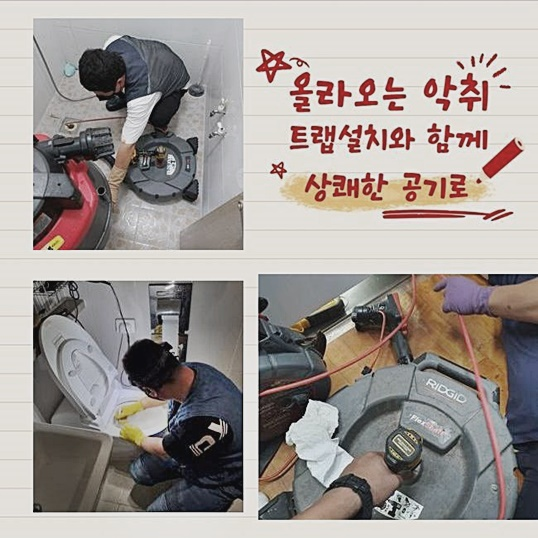
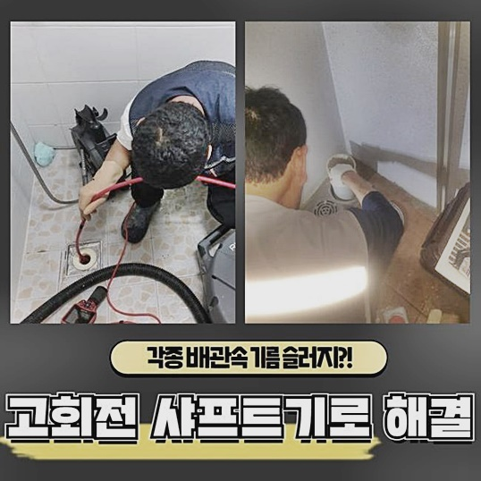
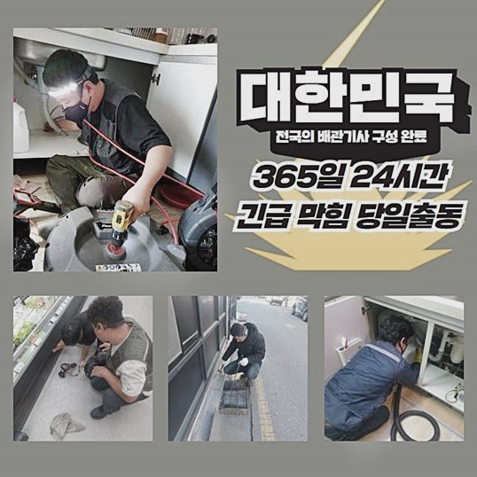
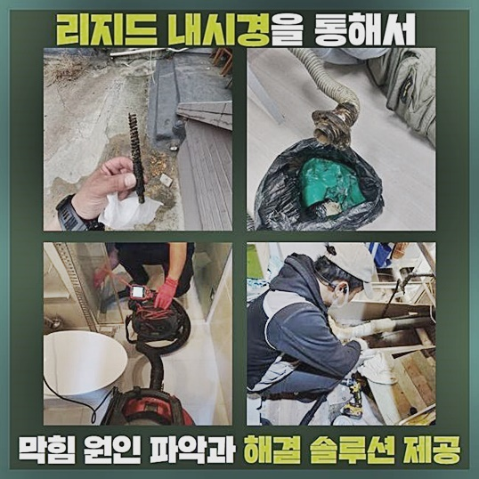
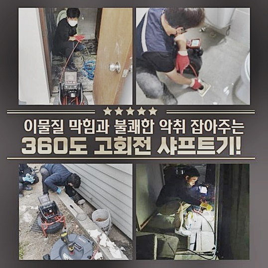
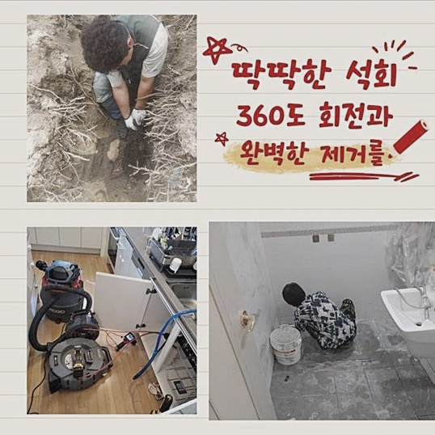
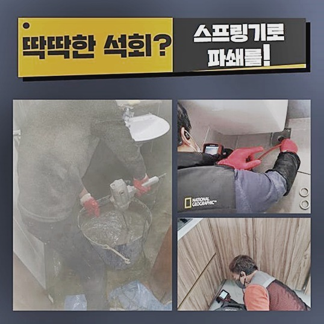

🏠 대야동씽크대배수구역류 신현동 냄새차단 설비하는곳
용인시 처인구 배관막힘 전문 시공 후기

📋 작업 개요
- 위치: 용인시 처인구, 수원시 영통구, 화성시 동탄
- 서비스 유형: 배관막힘, 하수구청소, 누수수리, 배관수리, 고압세척, 내시경점검
- 작업 일시:
- 업체명: 하수구수사대 (010-5615-2118)
🔍 문제 상황
대야동씽크대배수구역류 신현동 냄새차단 설비하는곳
아파트나 빌라엔 화장실 및 주방 등이 존재하여 이 부근으로 여러 종류의 찌꺼기가 모여들곤 합니다
해당 상황에서 단단하고 끈끈한 물질들이 제대로 배수설비로 흘러가지 않고 적체돼 트러블이 나타나는 것이죠
샤워나 설거지를 하는 과정에서 다양한 슬러지와 유분 등이 흘러내려가죠
이런 물체들은 서로 끌어당기고 배관벽에 들러붙으면서 사이즈가 점점 커지죠
크기가 증가한 찌꺼기뭉치는 파이프를 차단하여 누수 등의 사태로 발전할 수 있기에 적시에 청소해 주어야 한답니다
다세대주택이나 빌라와 같은 건축물은 다대수의 개인들이 살기 때문에 하수도와 관계된 장애가 종종 발생하는 편이랍니다
배관 고장이 나타나면 일과에 해을 주어 고생을 증가시킵니다
싱크대나 목욕실은 수시로 넘나드는 곳이기 때문이랍니다
보통 이 상황에서 저희회사로 급히 방문수리를 요청하시죠
하수구청소 업무를 빈빈히 하는 저희팀은 다양한 문제를 항시 접하지만 반대로 이를 맨처음 체험하게 된다면 황당한 마음이 생기게 될 것입니다
상황이 한층 증가하기 이전에 한시라도 신속히 내방을 드리는 게 문제해결의 실마리라는 점을 고지해 드립니다
저희팀은 의뢰자분들의 난해한 심리를 충분히 이해하며 언제나 적시에 방문을 드리도록 시스템을 완비하였답니다

🔎 원인 분석
💡 전문가 진단: 정밀 진단 장비를 사용하여 슬러지의 고착 여부를 판명하고 타격/세척 작업을 실시했습니다.
오물탱크 쪽에서 배수관련 민원이 생긴 사정이라도 가정내에서 물이 빠져나가지 않는 모습이 발생하기도 해요
이것은 한군데의 하수관에서만 보이는 것이 아니라 다수의 세대에서 동시다발적으로 발발하기 쉽죠
보편적으로 하수관은 원활히 이용되다가 급작스럽게 정체되어 고초가 더욱더 증대한답니다
방치하면 할수록 잔재들의 총량이 증가하고 여러 분쟁이 나타나기 쉬워 적시에 대응해야 합니다
그렇기 때문에 최대한 빨리 출장을 단행하여 배관수리에 나서고 있답니다
배관막힘 초반엔 많이 걱정스럽지 않더라도 시간이 가면갈수록 예사롭지 않게 변모할 수가 있어요
파이프 안쪽 부근은 직관하기 어렵기 때문에 막힘이 점차 늘어가는 가운데 내팽개쳐질 수 있어요
더군다나 1~3층 사이에 위치한 현장은 역류증세로 배수관 활용이 불가능해지기도 하죠
가정에서 악취가 풍기거나 사용한 물 등이 쉽게 사라지지 않는다면 파이프 안이 정상적이지 않다는 의미일 수 있기에 선제적으로 처리하는 게 요구되죠
이럴 땐 배수관물청소로 대응하고 있어요
많은 세대가 거주하는 건물의 배수관 안에는 여러 잔재들이 수두룩하게 유입되기에 규칙적인 검진과 세척이 요망됩니다
이에 따라 저희들은 급하게 전화를 안 하셔도 확약된 날짜에 정례적으로 클리닝 작업을 실시하고 있죠
별도로 연락을 안주셔도 계약된 날에 예방하여 각종 석회물질과 생활 찌꺼기를 청소하고 있어요
이로서 해당 시스템을 활용하시는 손님들은 항상 하수관을 청결하게 접하실 수 있는 것이에요

🔧 작업 과정
이런 작업으로 역류 등과 같은 문제점을 방지한답니다
장소에 가면 제일 먼저 할 일이 바깥의 오수관홀을 점검하는 것이에요
여기는 건축물 배관을 통해 빠져나간 모든 이물들이 합쳐지는 처소이므로 배수관의 고장이 발생하면 이쪽을 바로 진단해보는 활동이 요망된답니다
오수관 커버를 들어올리면 하수관을 통해 이물들이 방출되지 못하고 적체되어 있다는 걸 인식할 수가 있었어요
10일 이상 이런 모양새가 연속된다면 맨홀 위로 오수와 쓰레기가 누출하기도 해요
역류 등으로 인해 사용한 물이 시원하게 빠져나가지 않으면 각종 쓰레기와 탁수가 바깥의 거리로 빠져나가 더큰 피해를 만들수가 있어요
이는 추가적인 냄새나 다른 피해도 일어날 수 있는 사태이므로 통수문제 신속한 방문과 조치가 요망됩니다
가장 처음에 할 행동은 배관 내측에 겹겹이 쌓인 슬러지를 없애는 것이며 우리는 작업차 상단에 석션설비를 세팅하여 다량의 이물들을 효율적으로 처치하죠
석션장비에 달린 고무 호스를 준비하여 내부에 적층되었던 찌꺼기를 능률적으로 없애 주었죠
고객세대로 가기 전엔 필수적으로 보유 장비 목록을 체계적으로 확인하는 과정을 거칩니다
이동차량엔 시공에 요구되는 기기들이 세팅되어 있고 업무 시작전에 항시 차의 이상유무를 확인하죠
운전과 관련된 문제가 있지는 않은지 꼼꼼하게 체크하고 차체에 결속된 기계가 제대로 가동되는지 파악합니다
파이프차단을 촉발한 슬러지를 없애고 석회등이 누적된 내부를 말끔하게 만들려면 기기가 제대로 활동되어야 하기 때문이에요
청소를 끝마친 후에는 사용한 장비도 소제하고 업무를 종결하고 있습니다
이와같이 저희팀은 매일 기기일체를 진단하며 급작스레 일어날 수 있는 고장에 빠르게 응답해드리고 있죠
이물들을 소제한 다음 외부정화조와 이어진 배수관을 소형 내시경CCTV를 활용해 헤아리는 시간을 갖습니다
파이프는 작은 길로 주먹 정도의 규모라고 생각하시면 되는데요
직시하기 난해한 배수관 내측의 문제점을 조사하기 위해선 내시경카메라 사용이 필수적이랍니다
저희팀은 전 작업 과정에서 내시경을 이용하게 되며 손님분에게도 이 모습을 보여드리고 있어요
이 모습을 보게되면 배관벽에 무수한 고형물이 있고 단단한 고체가 안을 채우고 있다는 사실을 직시하였답니다
이 때에는 고압의 청소 기구가 요망됩니다


✅ 작업 완료
해당 기계는 중량이 커진 슬러지를 분리하여 물이 뜻대로 흐르도록 합니다
이러한 사안들을 말씀해 드리며 공사진행을 한답니다
지속적인 세정업무를 통하여 이물 뭉치가 분쇄되고 사라져 버린 것을 직관하게 되었죠
하수관 벽을 둘러싼 석회 등도 청결히 없애서 내측을 깨끗이 만들었답니다
아무리 작은 잔재들이라도 제때 제거해 주어야 안쪽에서 누증되는 걸 막을 수 있어요
싱크대 유지보수나 배수와 관련된 해결이 필요하다면 편하신 시간에 전화해 주십시오




⚠️ 하수구 배관 막힘 예방 및 관리 가이드
- ✅ 머리카락, 비닐, 물티슈 등 물에 분해되지 않는 이물질은 절대 흘려보내지 마세요.
- ✅ 기름기 많은 식기는 설거지 전 키친타올로 먼저 기름때를 닦아내세요.
- ✅ 주기적으로 배수구에 뜨거운 물을 가득 부어주어 유지방 고착을 방지하세요.
- ✅ 작업 후 1년 이내 재발 시 무상 A/S 보증 서비스를 제공합니다.
💡 핵심 정리
- 확실한 장비 작업(내시경 점검 및 샤프트 스케일링)으로 원인을 뿌리 뽑습니다.
- 작업 후 1년 이내에 동일한 부위 재발 시 100% 무상 A/S 서비스를 보장합니다.
- 서울 · 경기 · 인천 전 지역에 24시간 언제든 긴급 출동할 수 있도록 항시 대기 중입니다.
❓ 자주 묻는 질문 (FAQ)
🚨 용인시 처인구 배관막힘 문제로 고민이신가요?
정확한 원인 진단과 확실한 시공으로 재발 없는 해결을 약속드립니다.
24시간 긴급 출동 | 서울 · 경기 · 인천 전지역 | 1년 내 재발 시 무상 A/S